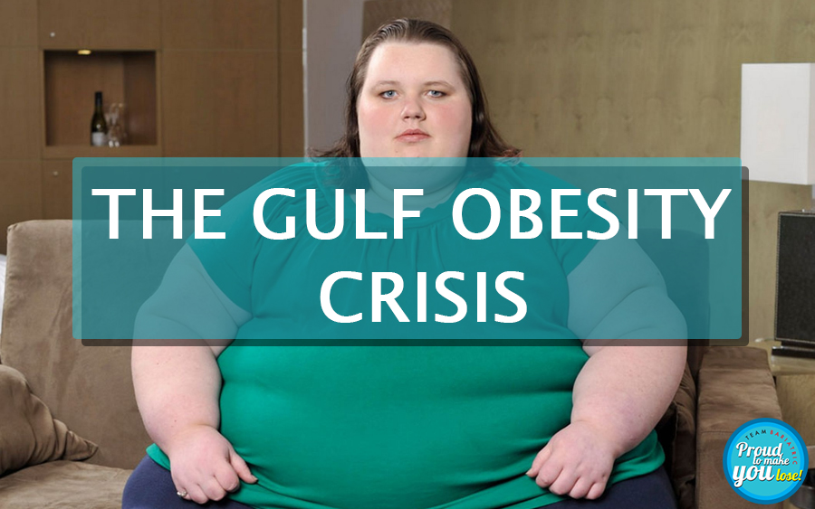

Walking Tips for Bariatric Surgery Patients During Delhi's Monsoon Season
It is raining heavily in Delhi, this year the incessant rains have brought in an early epidemic of Dengue Chickenguniya and Malaria. The sky is densely overcast, when the sun breaks out the heat and sultry humidity makes it tough even for the hardened walker. Even the Budhdhas the eternal wanderer rested during the months of Chaturmas, yet walking in rainy season has its own charm. The roadside kikar and jamun trees and shrubs are now adorned with bright green and emerald. The gardens are lush green and if lucky you may come across a majestic peacock dancing in the pitter-patter. With certain precautions, walking in rains can be real fun.
Here are a few walking tips specially for those who have received bariatric surgery:
- Walk at your own pace, keep a journal, walk every day,
- Increase your pace and distance gradually, a 10 min walk three times a day at home for first three days, then increase it gradually to 30 min twice a day at a brisk pace by four weeks.
- You should be a little breathless while you are walking, and conversation should be difficult.
- Cover yourself well, better wear full length track suites as dengue mosquitoes fly low and are most active at dusk and dawn,
- Walking on treadmill strains your knees; Wear a well fitting shoe with silicon insole
- You can get dehydrated quickly due to humidity and sweating Sip lots of water before, during and after walking, don’t wait to become thirsty; you are already dehydrated by then,
- Do take your protein supplements religiously, at least 1 gram proteins per kg weight is the minimum adequate
Ready to optimize your post-bariatric walking routine? Consult a top bariatric surgeon in Delhi for personalized advice and support to ensure you're walking safely and effectively during the rainy season. Book your consultation today!
Keep walking keep sipping
Back to Blog